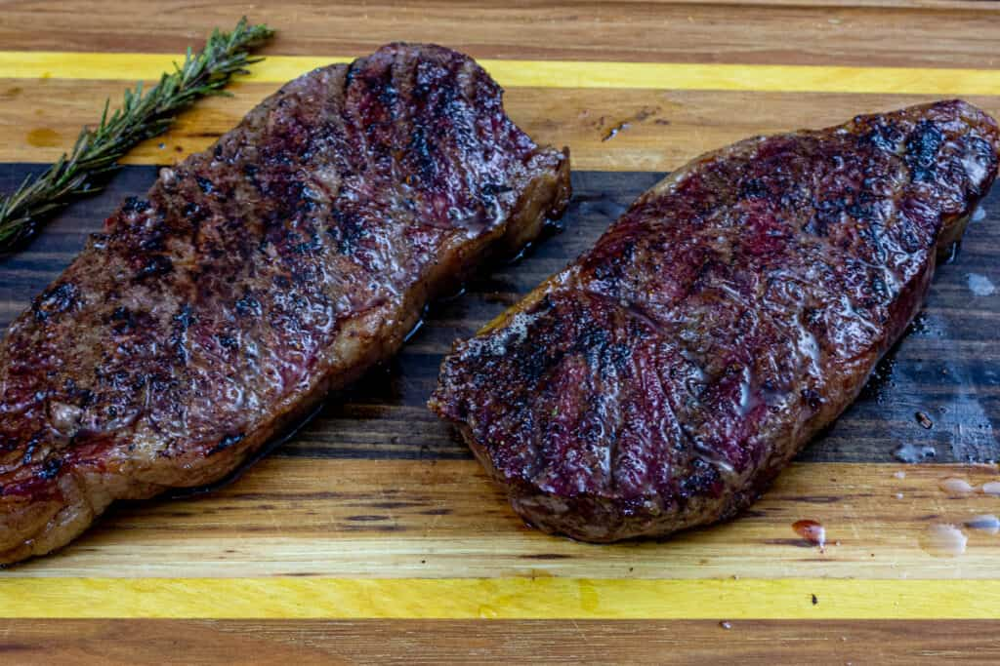

Smoked NY Strip Steak

Description
There's no better way to do steak than a good ole reverse sear.
This reverse seared New York strip is seasoned with our Traeger Beef Rub, smoked, and seared hot to tender perfection.
Ingredients
- (1-1/2 inch thick) New York strip steaks
- Trager Beef Rub
- Unsalted Butter
Steps
- Pre heat to 225
- Season meat with traeger beef rub
- Place steaks on grill, close the lid and smoke until internal temp is between 105F and 110F about 60mins
- Remove from the grill, increase temp to 450 and prehead with lid closed
- Return steaks to grill, cooking for 4mins then flip. Top with butter and let cool
WARNING! Smoked steak is amazing, but this recipe isn't...
If you want a delicious steak, click THIS LINK!
you won't regret it!
Click This to Go Back Home